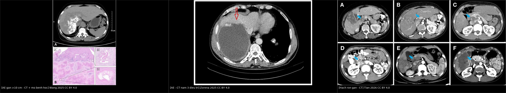
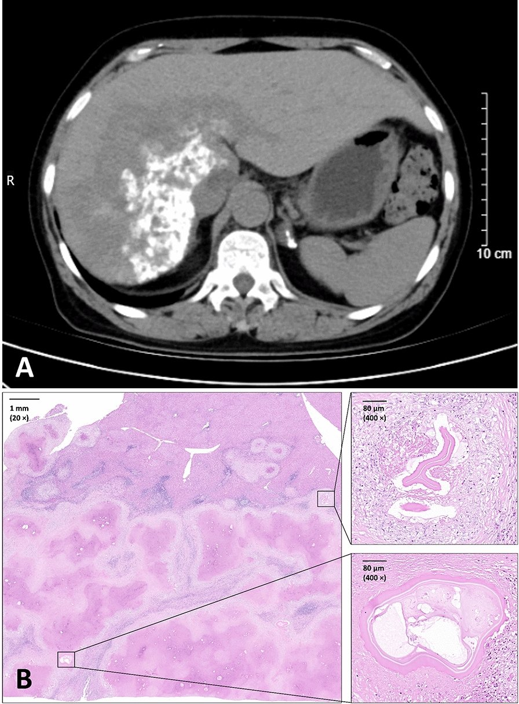
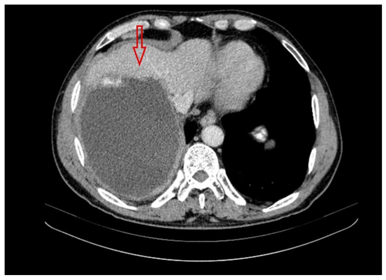
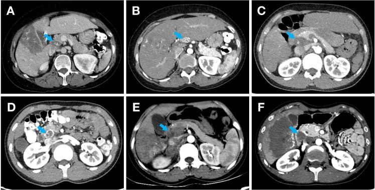

1810 — Cắt gan & ghép gan trong sán thể hang (AE): R0, biên cắt, chỉ định ghép, recEm18 + MRI 10 năm
Tags: pattern:gia-u pattern:tieu-dang-nang vung:gan score:PNM protocol:CT-3-thi protocol:MRI-gan protocol:PET-CT incidentaloma:khong
Mức chắc chắn (certainty): tổng hợp y văn (literature synthesis) — 2 đoàn hệ phẫu thuật (334 ca Zurich 1973–2022; 195 ca Lausanne–Bern 2000–2021), 1 đoàn hệ tiến cứu ngừng albendazole sớm (15 ca), 1 registry Pháp (906 ca), 1 loạt ghép/autotransplant (19 ca) và 3 ca có ảnh gốc; số nào chưa đối chiếu toàn văn ghi "chưa rõ".
1. Tổng quan bệnh học – cơ chế hình ảnh
- Vì sao phải mổ: Echinococcus multilocularis mọc thành vô số vi nang xâm lấn theo khoảng kẽ, không có vỏ xơ, phá hủy nhu mô và lan theo đường mật – mạch máu như ung thư. Thuốc benzimidazole chỉ kìm ký sinh (parasitostatic), không diệt; vì vậy cắt bỏ toàn bộ tổn thương (R0) + albendazole hậu phẫu là cách duy nhất đạt khỏi bệnh. Không điều trị, 90% tử vong trong 10 năm.
- R0 nghĩa là gì: mô bệnh học không còn ký sinh ở diện cắt. Vì tổn thương không có vỏ, “bóc nhân” là bất khả thi — phải cắt gan kèm một viền nhu mô lành, giống cắt u ác. Đây là lý do R1 (còn ký sinh ở bờ) tái phát cao gấp nhiều lần R0.
- Số liệu chốt từ đoàn hệ Zurich (334 ca, 1973–2022) (
PMC12044251):- Mổ 151/334 (45,2%); trong đó 126 ca mổ với ý định chữa khỏi, R0 105 (83,3%), R1 21 (16,7%).
- Tái phát 13/126 (10,3%): 8/21 ca R1 (38,1%) so với 5/105 ca R0 (4,8%); tất cả tái phát trong gan, 10 ca tại diện cắt.
- R1 kéo dài albendazole trung vị 79 tháng so với 26 tháng ở R0 (IQR 23–31,5).
- Ghép gan chỉ 3/334 (0,9%), trong đó chỉ 1 ca vì AE.
- Đoàn hệ Lausanne–Bern (195 ca cắt gan, 2000–2021) (
PMC13414700): R0 70–77% (77% ở nhóm suy giảm miễn dịch, 70% nhóm còn lại); albendazole sau mổ 24 tháng nếu R0; tái phát 10/195 (5,1%), tỷ lệ tái phát 2 năm 1%; sống không tái phát 212 vs 206 tháng, sống toàn bộ 236 vs 210 tháng; rò mật sau mổ 8% vs 17%; tử vong 90 ngày 2% vs 0%. Suy giảm miễn dịch không phải yếu tố nguy cơ tái phát (HR 1,4; p = 0,626). - Registry Pháp (906 ca, 1982–2021) (
PMC12355909): mổ 44,4%; cắt gan chữa khỏi tăng từ 31,7% (1982–1999) lên 89,4% (2011–2021); ghép gan giảm từ 17,4% xuống 2,4%; dùng benzimidazole sau 2000 gắn với giảm nguy cơ tử vong trong 10 năm (SHR 0,43; 0,28–0,66). - TẠI SAO hình ảnh quyết định mổ được hay không (vật lý + mô bệnh):
- MRI T2 là chuỗi xung chủ lực: vi nang chứa dịch → T2 rất sáng; dải xơ/collagen → T2 tối. Tổn thương “chùm nho sáng trong nền tối” cho biết ranh giới ký sinh còn hoạt động — chính là bờ cần cắt qua. Vi nang còn sáng ở diện cắt dự kiến = nguy cơ R1.
- CT: trung tâm hoại tử/xơ không ngấm thuốc (không có lưới mạch nuôi như HCC); vôi hóa loạn dưỡng nằm trong vùng xơ. Vôi hóa không chứng minh ký sinh đã chết, và không dùng để xác định bờ cắt.
- PET/CT: FDG tăng ở vành viêm quanh tổn thương, không trong nang; PET dùng để đánh giá hoạt tính, không dùng để đo kích thước hay bờ.
- recEm18 (kháng thể tái tổ hợp): phản ánh ký sinh còn sống; sau cắt triệt để kháng thể giảm nhanh. Đây là mốc theo dõi song song với MRI, không thay thế hình ảnh.
2. Mẫu hình + chẩn đoán phân biệt theo vị trí (gamut)
- Theo khả năng cắt R0 (quyết định điều trị):
- Tổn thương ngoại vi, một thùy, không chạm rốn gan/tĩnh mạch gan/IVC → cắt gan R0 (segmentectomy/hemihepatectomy).
- Xâm lấn rốn gan/đường mật chính → vàng da, cholangitis tái diễn; cắt R0 khó, thường cần cắt gan mở rộng + tạo hình đường mật, hoặc ghép gan.
- Xâm lấn tĩnh mạch gan/IVC → hội chứng Budd–Chiari; cắt gan ex vivo + autotransplant (ELRA) hoặc ghép đồng loài.
- Hạch rốn gan di căn → nếu không lấy hạch, nguy cơ tái phát tăng; cắt gan triệt căn + nạo hạch rốn gan có hệ thống (
PMC12867826). - Di căn xa (phổi, não, xương) → không chữa khỏi bằng mổ gan; điều trị toàn thân, can thiệp triệu chứng.
- Xơ gan mật thứ phát/tăng áp cửa do AE → ghép gan là lựa chọn.
- Theo hình thái (Kodama) — nhắc lại từ bài 144: type 1 vi nang thuần; type 2 vi nang + phần đặc (
40%); type 3 phần đặc + nang lớn bờ không đều (46%); type 4 đặc thuần (dễ nhầm ung thư); type 5 nang lớn thuần (dễ nhầm nang lành). - Gamut “khối gan giả u có vôi hóa, không ngấm thuốc”: AE · CE (vỏ xơ, vôi hóa vỏ) · iCCA (ngấm tiến triển) · HCC (ngấm động mạch + washout) · di căn niêm dịch · áp-xe xơ hóa · u máu thoái triển.
3. Bảng so sánh phân biệt (ma trận đối chiếu)
| Thực thể (entity) | Hình ảnh điển hình | Chốt vào (rule-in) | Chốt loại (rule-out) | Gợi ý xác nhận |
|---|---|---|---|---|
| AE cắt được R0 | Khối vi nang T2 sáng, bờ không đều, cách rốn gan/tĩnh mạch gan ≥ một viền nhu mô lành, không xâm lấn IVC | Vi nang + vôi hóa + không ngấm trung tâm + tổn thương khu trú một thùy | Xâm lấn rốn gan/IVC, hạch rốn gan dương, di căn xa → không R0 | MRI gan + MRCP + CT ngực; PNM; hội chẩn |
| AE không cắt được (rốn gan/IVC) | Tổn thương chạm rốn gan, hẹp/giãn đường mật, huyết khối u trong tĩnh mạch gan | Vàng da + giãn đường mật trong gan + tổn thương ôm rốn gan | Tổn thương ngoại vi, không chạm mạch/mật lớn → cắt được | MRCP, CT 3 thì, PET; đánh giá ghép/ELRA |
| AE đã điều trị, “bất hoạt” | Vôi hóa dày, không còn vi nang T2 sáng, PET âm, recEm18 giảm | PET âm + recEm18 âm + tổn thương ổn định ≥ 6–12 tháng | Còn vi nang sáng/PET dương → còn hoạt tính | MRI + PET + recEm18; không dựa vào vôi hóa |
| iCCA (ung thư đường mật trong gan) | Khối đặc, ngấm thuốc tiến triển thì muộn, co kéo đường mật, teo thùy | Ngấm tăng dần + xâm lấn đường mật + CA 19-9 tăng | Không ngấm, vi nang, vôi hóa trong lòng → AE | CE-MRI/MRCP; sinh thiết |
| HCC | Ngấm mạnh thì động mạch, washout thì cửa/muộn, có vỏ bao | APHE + washout (LI-RADS 5) | Không washout, không ngấm → không HCC | CE-MRI/CT, AFP (bài 121) |
| CE (nang sán dạng nang) | Nang vỏ xơ rõ, vôi hóa vỏ, có thể nang con “bánh xe” | Vỏ xơ + vôi hóa vỏ + không xâm lấn mô kẽ | Không vỏ, vi nang lan tỏa → AE | Siêu âm WHO CE 0–5; huyết thanh; PAIR chỉ cho CE |
| Di căn gan | Nhiều ổ, bờ rõ, ngấm vòng, có ổ nguyên phát | Nhiều tổn thương + ổ nguyên phát đã biết | Đơn độc, vi nang + vôi hóa → AE | CT ngực/bụng, PET, mô bệnh |
| Áp-xe gan | Ổ dịch vách, khí trong ổ, phù quanh | Sốt + CRP cao + khí trong ổ | Không sốt, mạn tính, vôi hóa → AE | Chọc hút/cấy, dẫn lưu |

Trái: AE gan > 10 cm — CT và mô bệnh học (ca ghép gan, tử vong sau mổ). Giữa: AE sau 3 năm điều trị — còn thành phần dịch, bờ không đều, vôi hóa. Phải: hạch rốn gan 23 mm, vôi hóa nốt và giảm đậm độ — di căn hạch. Nguồn: Infect Dis Poverty 2025 (PMC12288280), Pathogens 2025 (PMC12567464), Front Oncol 2026 (PMC12867826) — CC BY 4.0; ảnh ghép letterbox, không crop.Ba câu hỏi trước khi mổ
- Còn ký sinh sống không? (MRI vi nang T2 + PET vành + recEm18) — tổn thương chết không cần mổ.
- Cắt được R0 không? (bờ so với rốn gan, tĩnh mạch gan, IVC; hạch rốn gan; di căn ngoài gan).
- Cắt xong còn đủ gan không? (thể tích gan còn lại — FLR; nếu không → ELRA/ghép).
4. Protocol chụp + hệ phân độ/điểm chuẩn hóa
- Trước mổ:
- CT bụng 3 thì + CT ngực (tìm di căn phổi) — đo kích thước 3 chiều, quan hệ rốn gan/IVC, hạch.
- MRI gan (T1 in/opposed, T2 fat-sat, DWI/ADC, T1 sau tiêm thì muộn) ± MRCP khi vàng da; MRI là chuỗi tốt nhất để vẽ bờ vi nang.
- PET/CT khi cần phân biệt hoạt tính/ổn định hoặc tìm di căn ẩn.
- PNM (WHO-IWGE) thay TNM: P (vị trí/số thùy trong gan), N (xâm lấn cơ quan lân cận/hạch), M (di căn xa).
- Huyết thanh 2 bước: ELISA Em2/Em2+/recEm18 → immunoblot; tổn thương sớm có thể âm tính.
- Định nghĩa R0/R1 (dùng trong mọi đoàn hệ): R0 = diện cắt mô bệnh học không có ký sinh; R1 = còn ký sinh ở diện cắt. Không dùng “cắt sạch trên hình ảnh” thay cho R0 mô bệnh học.
- Albendazole (ABZ) quanh mổ: 10–15 mg/kg/ngày chia 2 lần, uống cùng bữa nhiều mỡ; TDM albendazole sulfoxide lấy máu 4 giờ sau uống ở tuần 4 – 8 – 12; ngừng/giảm khi ALT > 3× giới hạn bình thường hoặc suy tủy. Sau R0: 24 tháng (WHO: 2 năm); R1/không mổ được: suốt đời.
- Rút ngắn ABZ có kiểm soát (đoàn hệ tiến cứu EchinoVISTA, 15 ca) (
PMC12625319): nếu PET/CT âm + MRI âm ở năm thứ 1, có thể ngừng ABZ sớm — 10/15 ca ngừng ở trung vị 14 tháng, không tái phát trong 47 tháng theo dõi; recEm18 âm không bắt buộc, chỉ cần xu hướng giảm. Cỡ mẫu nhỏ — chưa phải chuẩn đại trà. - Ghép gan — chỉ định và giới hạn:
- Chỉ định: xâm lấn rốn gan/mạch máu không thể R0, xơ gan mật thứ phát/tăng áp cửa, cholangitis tái diễn do tổn thương rốn gan, Budd–Chiari do AE.
- Không phải “chữa khỏi sạch”: tổn thương tồn dư không phải chống chỉ định ghép, nhưng phải ABZ suốt đời sau ghép và theo dõi tái phát; ghép là biện pháp cuối (
PMC13566459). - Ca minh họa: nam 32 tuổi, AE rốn gan giống Klatskin, cholangitis tái diễn → ghép gan đồng loài, kết cục tốt (
PMC12459208). Ngược lại, nữ 58 tuổi tổn thương > 10 cm được ghép nhưng tử vong sau mổ (PMC12288280) — nhắc rằng ghép trong AE tiến xa có nguy cơ cao. - ELRA (cắt gan ex vivo + autotransplant) là thay thế khi tổn thương xâm lấn IVC/mạch gan nhưng gan còn lại đủ: 19 ca, biến chứng 84,2%, tử vong chu phẫu 15,8%, mổ 840 phút, mất máu 2.000 mL, không tái phát ở 16 ca sống trong 595 ngày (
PMC12822204).
- Theo dõi sau mổ (10 năm): hình ảnh 3 tháng sau mổ, sau đó mỗi năm đến 10 năm; MRI là lựa chọn tốt nhất; recEm18 song song (giảm nhanh sau cắt triệt để); ngừng ABZ khi PET âm + recEm18 âm và tổn thương ổn định (bài 144).
flowchart TD
A[AE gan đã xác định] --> B{MRI + PET + recEm18: còn hoạt tính?}
B -->|Không| C[Theo dõi 6-12 tháng, không mổ]
B -->|Có| D{PNM: di căn ngoài gan?}
D -->|Có| E[Điều trị toàn thân ABZ, can thiệp triệu chứng]
D -->|Không| F{Cắt R0 được?<br/>bờ cách rốn gan/IVC}
F -->|Có| G[Cắt gan R0 + ABZ 24 tháng]
F -->|Không, xâm lấn mạch gan/IVC| H{FLR đủ sau cắt?}
H -->|Đủ| I[ELRA: cắt ex vivo + autotransplant]
H -->|Không| J[Ghép gan + ABZ suốt đời]
G --> K{R1 mô bệnh học?}
K -->|Không| L[ABZ 24 tháng, MRI + recEm18 hằng năm đến 10 năm]
K -->|Có| M[ABZ kéo dài/suốt đời, theo dõi sát diện cắt]
5. Biến thể bình thường và cạm bẫy
- “Cắt sạch” trên MRI không bằng R0: vi nang < 1 mm có thể nằm ngoài độ phân giải; vì vậy phải cắt qua nhu mô lành, và R1 chỉ được xác định bằng mô bệnh học. Ca R1 có 38% tái phát so với 4,8% ở R0 — khác biệt quyết định thời gian ABZ.
- Vôi hóa ≠ khỏi bệnh: vôi hóa tồn tại lâu trong khi ký sinh còn sống; đánh giá hoạt tính bằng vi nang T2 + PET + recEm18 (bài 144).
- PET âm ≠ ký sinh chết: PET đo phản ứng viêm quanh tổn thương, không đo sức sống ký sinh.
- Hạch rốn gan: hạch to, vôi hóa nốt, giảm đậm độ/không ngấm gợi ý di căn; mô hình dự báo đạt AUC 0,895 (tập huấn luyện) và 0,817 (kiểm định). Cắt gan + nạo hạch rốn gan có hệ thống cho sống không bệnh tương đương nhóm không di căn hạch (p = 0,920), nhưng bỏ hạch nhiễm làm tăng tái phát (
PMC12867826). - Rò mật sau cắt gan 8–17% — không phải biến chứng hiếm; phân độ ISGLS dựa trên bilirubin dịch ≥ 3× huyết thanh từ ngày 3, xử trí theo bài 1814 (dẫn lưu → ERCP/PTBD → mổ).
- Suy giảm miễn dịch: không làm tăng tái phát sau cắt (HR 1,4; p = 0,626) nhưng làm tăng tần suất AE và có thể làm huyết thanh âm giả — không được loại trừ AE chỉ vì huyết thanh âm.
- Bẫy “ghép gan là xong”: phải ABZ suốt đời, theo dõi tái phát, và nguy cơ chu phẫu cao (ELRA: tử vong 15,8%).
- Bẫy hội chẩn muộn: vàng da ở AE không đồng nghĩa khối u không mổ được — có thể chỉ do mảnh hoại tử/ký sinh chèn đường mật, xử trí bằng dẫn lưu/ERCP trước rồi mổ sau (ca của
PMC12643812: dẫn lưu + ABZ 2,5 năm, tổn thương thoái triển rồi cắt gan trái R0).
6. Tự lượng giá — Blind Quiz
Ca 1 — Nữ 58 tuổi, chăn thả gia súc, khối gan > 10 cm. Nhìn CT kèm mô bệnh học, mô tả trước.

- Gợi ý: bạch cầu ái toan 0,90 × 10⁹/L, basophil 0,08 × 10⁹/L; tổn thương > 10 cm; đã ghép gan.
- Câu hỏi: Ba chẩn đoán phân biệt của khối lớn có vôi hóa? Yếu tố nào quyết định “cắt được hay phải ghép”? Vì sao ca này tiên lượng nặng?
Bấm để hiện đáp án (findings + chẩn đoán)
- Dấu hiệu: khối > 10 cm, bờ không đều, thành phần đặc – nang hỗn hợp, vôi hóa; mô bệnh xác nhận AE (genotype Mongolian).
- Chẩn đoán: AE gan tiến xa; đã ghép gan, tử vong sau mổ.
- Vì sao nặng: tổn thương quá lớn/xâm lấn, ghép trong bệnh tiến xa có nguy cơ chu phẫu cao; nhấn mạnh phát hiện sớm + R0 tốt hơn ghép muộn.
- Nguồn: Infect Dis Poverty 2025 (PMC12288280), Fig. 1 — CC BY 4.0.
Ca 2 — Nam 50 tuổi, nông dân vùng dịch tễ, đã dùng albendazole 3 năm không đều. CT năm thứ 3:

- Câu hỏi: Tổn thương còn hoạt tính không? Có chỉ định mổ ngay không? Cần thêm gì trước khi quyết định?
Bấm để hiện đáp án (findings + chẩn đoán)
- Dấu hiệu: tổn thương thùy phải còn thành phần dịch chiếm ưu thế, bờ không đều, vôi hóa — chưa chắc đã bất hoạt.
- Đánh giá: cần MRI T2 (vi nang còn sáng?) + PET/CT + recEm18; nếu còn hoạt tính và cắt được R0 → mổ + ABZ 24 tháng; nếu không cắt được → ABZ dài hạn/TDM.
- Cạm bẫy: vôi hóa và “đã dùng thuốc lâu” không đồng nghĩa khỏi.
- Nguồn: Pathogens 2025 (PMC12567464), Fig. 3 — CC BY 4.0.
Ca 3 — Trước mổ AE, CT thấy hạch 23 mm cạnh tĩnh mạch cửa, có vôi hóa nốt và giảm đậm độ. Xử trí?

- Câu hỏi: Hạch này là viêm hay di căn? Ảnh hưởng gì tới kế hoạch mổ và tiên lượng?
Bấm để hiện đáp án (findings + chẩn đoán)
- Dấu hiệu: hạch 23 mm, vôi hóa nốt, giảm đậm độ/không ngấm — bộ ba dự báo di căn hạch (AUC 0,895/0,817).
- Xử trí: cắt gan + nạo hạch rốn gan có hệ thống; bỏ hạch nhiễm làm tăng tái phát; sống không bệnh sau mổ tương đương nhóm không di căn (p = 0,920).
- Nguồn: Front Oncol 2026 (PMC12867826), Fig. 2 — CC BY 4.0.
Bài liên quan chéo
- 100 – Tổng quan hệ Bụng
- 144 – Sán thể hang ở gan (AE): vi nang, vôi hóa, PNM & albendazole
- 139 – Sán lá gan (fasciliasis) & nang sán gan
- 106 – Xơ hóa đường mật do chất diệt đầu sán
- 1809 – Rò mật–nang dai dẳng sau PAIR
- 1814 – Rò mật sau cắt gan: ISGLS A/B/C, CE-MRCP, ERCP/PTBD
- 121 – LI-RADS: khối gan & ngấm thuốc
- 173 – Ung thư đường mật trong gan trên nền Caroli
- 133 – Hẹp miệng nối đường mật sau ghép
- 302 – Nang sán xương & cột sống ở trẻ
Ảnh
- Tên file:
1810_cat-ghep-gan_<Modality>_<SourceID>.jpg; nguồn + giấy phép từng ảnh ởimages/CREDITS.md. - Ảnh ghép
composite_1810_cat-ghep-gan.jpgtạo bằngtools/make_composite.py(letterbox nền đen, không crop/kéo giãn).
Không dùng để chẩn đoán độc lập khi chưa có người hướng dẫn.